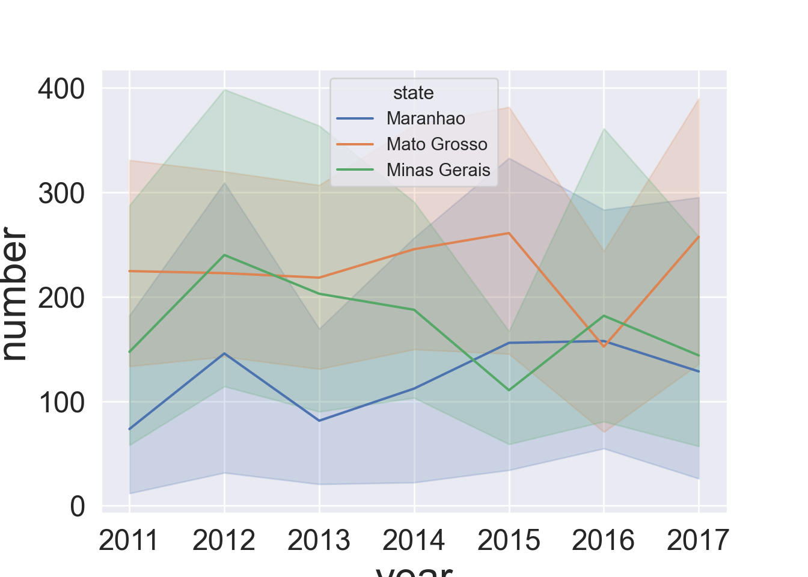
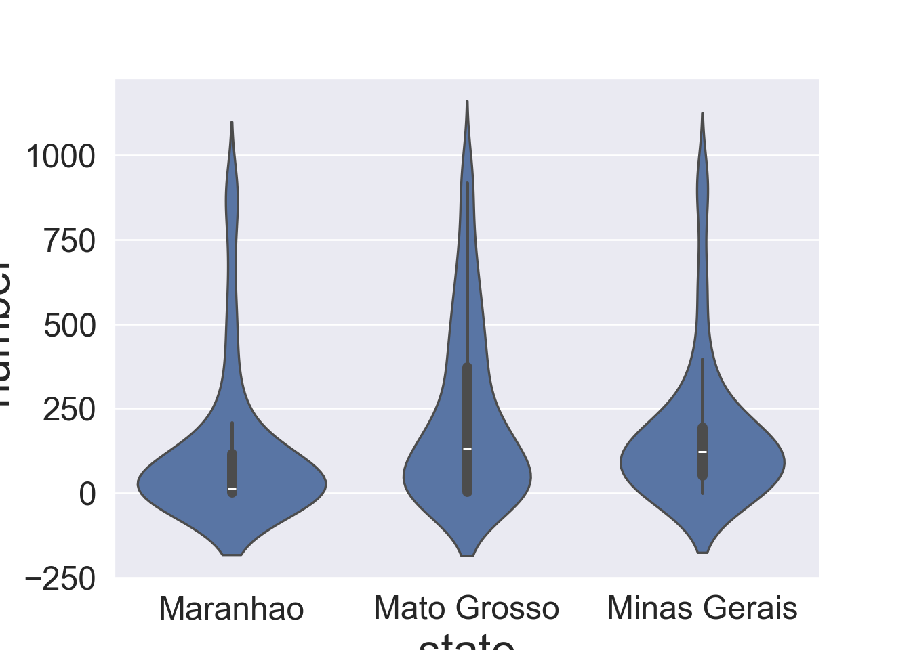
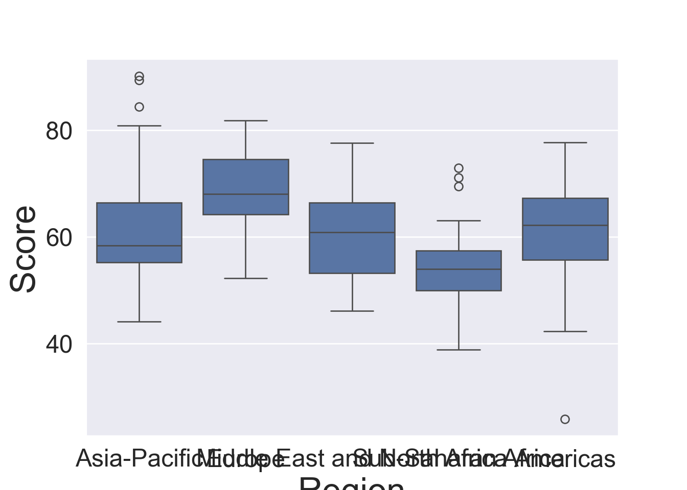
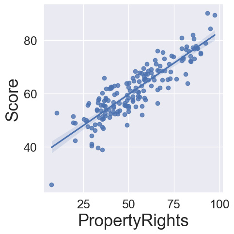
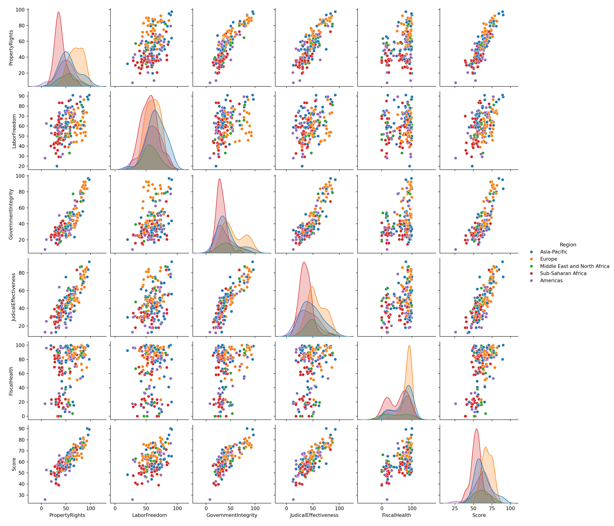
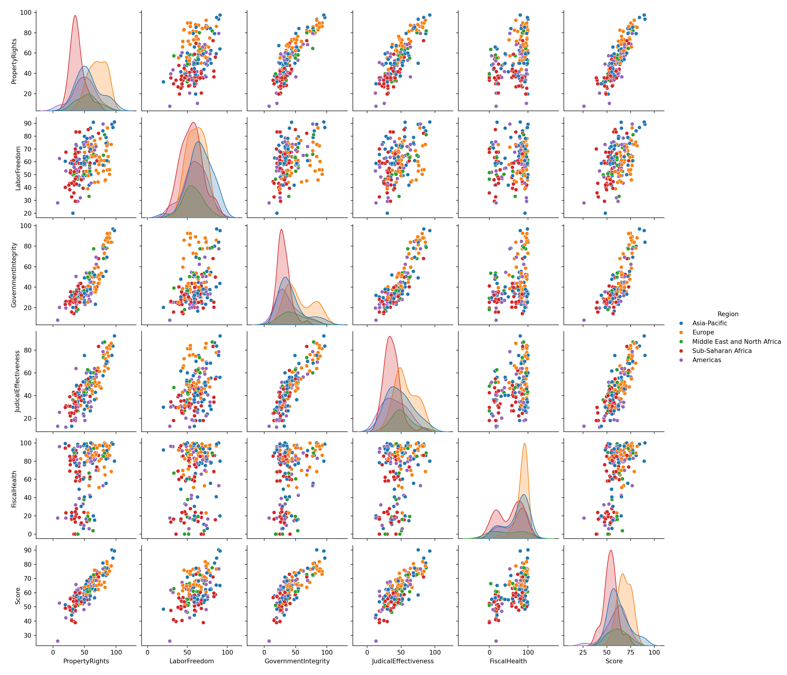
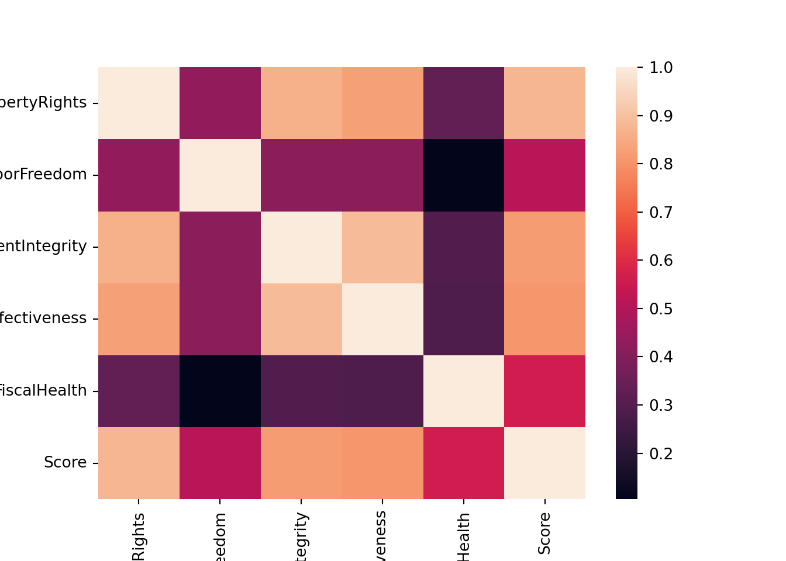
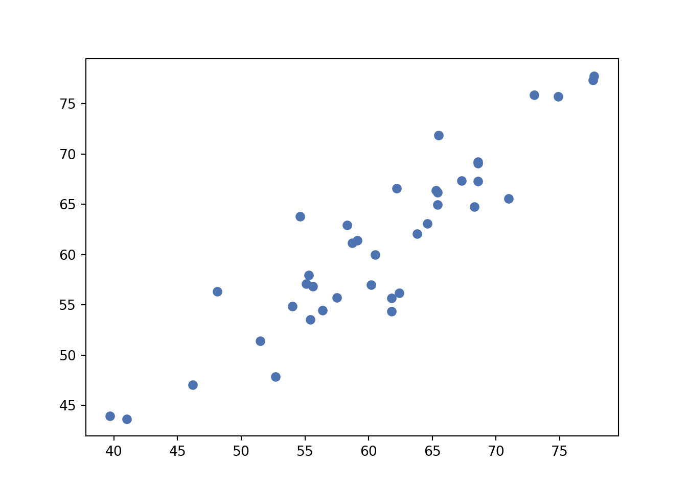
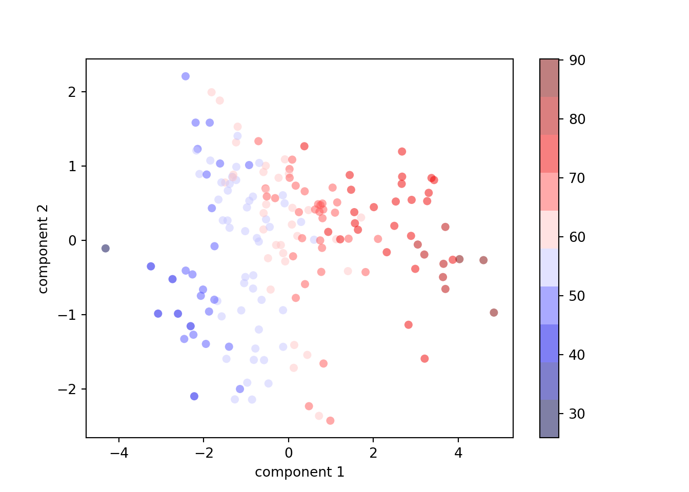

FOREST FIRES IN BRAZIL
See https://www.kaggle.com/gustavomodelli/forest-fires-in-brazil for a full description of the dataset.
Import packages
import pandas as pd #Handle datasets
import seaborn as sns #Plots
import matplotlib.pyplot as plt #Plots
import matplotlib
#Set some graphical parameters
rc={'axes.labelsize': 25, 'figure.figsize': (20,10),
'axes.titlesize': 25, 'xtick.labelsize': 18, 'ytick.labelsize': 18}
sns.set(rc=rc)
#Path data
path = 'C:/Users/Andreella/Documents/GitHub/angeella.github.io/Data'
df = pd.read_csv(path + '/amazon.csv',encoding="ISO-8859-1")First \(3\) observations:
## year state month number date
## 0 1998 Acre Janeiro 0.0 1998-01-01
## 1 1999 Acre Janeiro 0.0 1999-01-01
## 2 2000 Acre Janeiro 0.0 2000-01-01Some information about the variables:
## <class 'pandas.core.frame.DataFrame'>
## RangeIndex: 6454 entries, 0 to 6453
## Data columns (total 5 columns):
## # Column Non-Null Count Dtype
## --- ------ -------------- -----
## 0 year 6454 non-null int64
## 1 state 6454 non-null object
## 2 month 6454 non-null object
## 3 number 6454 non-null float64
## 4 date 6454 non-null object
## dtypes: float64(1), int64(1), object(3)
## memory usage: 252.2+ KBWe are interested about the number of forest fires in Brazil
## count 6454.000000
## mean 108.293163
## std 190.812242
## min 0.000000
## 25% 3.000000
## 50% 24.000000
## 75% 113.000000
## max 998.000000
## Name: number, dtype: float64To have an simple plot, we take a subset of the dataset:
We do a boxplot about the number of fire by groups, i.e., the states and the years.
We do a timeseries plot with error bands:

also we do a grouped violinplots:

For other plots, please refers to https://seaborn.pydata.org/examples/index.html.
ECONOMIC FREEDOM INDEX
See https://www.kaggle.com/lewisduncan93/the-economic-freedom-index for a full description of the dataset.
Load and preprocess data
dt = pd.read_csv(path + '/economic_freedom_index2019_data.csv',encoding="ISO-8859-1")
dt.columns = dt.columns.str.replace(' ', '')
dt.columns = dt.columns.str.replace('2019', '')
dt.columns = dt.columns.str.replace('%', '')
dt.columns = dt.columns.str.replace('(', '')## <string>:1: FutureWarning: The default value of regex will change from True to False in a future version. In addition, single character regular expressions will *not* be treated as literal strings when regex=True.## <string>:1: FutureWarning: The default value of regex will change from True to False in a future version. In addition, single character regular expressions will *not* be treated as literal strings when regex=True.Basic info
## <class 'pandas.core.frame.DataFrame'>
## Int64Index: 173 entries, 0 to 185
## Data columns (total 34 columns):
## # Column Non-Null Count Dtype
## --- ------ -------------- -----
## 0 CountryID 173 non-null int64
## 1 CountryName 173 non-null object
## 2 WEBNAME 173 non-null object
## 3 Region 173 non-null object
## 4 WorldRank 173 non-null float64
## 5 RegionRank 173 non-null float64
## 6 Score 173 non-null float64
## 7 PropertyRights 173 non-null float64
## 8 JudicalEffectiveness 173 non-null float64
## 9 GovernmentIntegrity 173 non-null float64
## 10 TaxBurden 173 non-null float64
## 11 Gov'tSpending 173 non-null float64
## 12 FiscalHealth 173 non-null float64
## 13 BusinessFreedom 173 non-null float64
## 14 LaborFreedom 173 non-null float64
## 15 MonetaryFreedom 173 non-null float64
## 16 TradeFreedom 173 non-null float64
## 17 InvestmentFreedom 173 non-null float64
## 18 FinancialFreedom 173 non-null float64
## 19 TariffRate 173 non-null float64
## 20 IncomeTaxRate 173 non-null float64
## 21 CorporateTaxRate 173 non-null float64
## 22 TaxBurdenofGDP 173 non-null float64
## 23 Gov'tExpenditureofGDP 173 non-null float64
## 24 Country 173 non-null object
## 25 PopulationMillions 173 non-null object
## 26 GDPBillions,PPP 173 non-null object
## 27 GDPGrowthRate 173 non-null float64
## 28 5YearGDPGrowthRate 173 non-null float64
## 29 GDPperCapitaPPP 173 non-null object
## 30 Unemployment 173 non-null object
## 31 Inflation 173 non-null float64
## 32 FDIInflowMillions 173 non-null object
## 33 PublicDebtofGDP 173 non-null float64
## dtypes: float64(24), int64(1), object(9)
## memory usage: 47.3+ KBSome plots
Boxplot by group, i.e. region:

First scatter plot:
We can put directly the linear regression fitting:

Density plot of the score variable:
Pair plot considering some variables, i.e. Property Rights, Labor Freedom, Government Integrity, Judical Effectiveness, Fiscal Health, Region and Score:
dt1 = dt[['PropertyRights', 'LaborFreedom', 'GovernmentIntegrity', 'JudicalEffectiveness','FiscalHealth', "Score", 'Region']] 

Linear regression
Import packages
import statsmodels.api as sm
import statsmodels.formula.api as smf
from sklearn.metrics import mean_squared_error
import sklearnCorrelation matrix
corr = dt[['PropertyRights', 'LaborFreedom', 'GovernmentIntegrity', 'JudicalEffectiveness','FiscalHealth', "Score"]].corr()
corr## PropertyRights LaborFreedom ... FiscalHealth Score
## PropertyRights 1.000000 0.432746 ... 0.329969 0.876601
## LaborFreedom 0.432746 1.000000 ... 0.104431 0.512976
## GovernmentIntegrity 0.866998 0.413794 ... 0.292240 0.818174
## JudicalEffectiveness 0.826805 0.421694 ... 0.287380 0.805825
## FiscalHealth 0.329969 0.104431 ... 1.000000 0.559395
## Score 0.876601 0.512976 ... 0.559395 1.000000
##
## [6 rows x 6 columns]Heatmap of the correlation matrix:

We split the dataset into training (0.8) and test set (0.2):
Linear regression having as dependent variable the Score and PropertyRights, LaborFreedom and FiscalHealth as explicative variables:
results = smf.ols('Score ~ PropertyRights + LaborFreedom + FiscalHealth', data=train).fit()
results.summary()| Dep. Variable: | Score | R-squared: | 0.870 |
|---|---|---|---|
| Model: | OLS | Adj. R-squared: | 0.867 |
| Method: | Least Squares | F-statistic: | 314.7 |
| Date: | Fri, 20 Sep 2024 | Prob (F-statistic): | 2.92e-62 |
| Time: | 10:19:07 | Log-Likelihood: | -392.57 |
| No. Observations: | 145 | AIC: | 793.1 |
| Df Residuals: | 141 | BIC: | 805.1 |
| Df Model: | 3 | ||
| Covariance Type: | nonrobust |
| coef | std err | t | P>|t| | [0.025 | 0.975] | |
|---|---|---|---|---|---|---|
| Intercept | 26.8577 | 1.457 | 18.429 | 0.000 | 23.977 | 29.739 |
| PropertyRights | 0.3654 | 0.019 | 19.724 | 0.000 | 0.329 | 0.402 |
| LaborFreedom | 0.1408 | 0.024 | 5.869 | 0.000 | 0.093 | 0.188 |
| FiscalHealth | 0.0992 | 0.010 | 9.508 | 0.000 | 0.079 | 0.120 |
| Omnibus: | 3.051 | Durbin-Watson: | 1.783 |
|---|---|---|---|
| Prob(Omnibus): | 0.218 | Jarque-Bera (JB): | 3.073 |
| Skew: | -0.344 | Prob(JB): | 0.215 |
| Kurtosis: | 2.814 | Cond. No. | 516. |
Notes:
[1] Standard Errors assume that the covariance matrix of the errors is correctly specified.
We predict the score values using the test set:

Compute the mean squared error:
## 12.778560770806367We try to use a linear mixed model, considering as random effects the Region variable.
md = smf.mixedlm("Score ~ PropertyRights + LaborFreedom + FiscalHealth", train, groups="Region")
mdf = md.fit()## C:\Users\ANDREE~1\AppData\Local\R-MINI~1\envs\R-RETI~1\lib\site-packages\statsmodels\base\model.py:604: ConvergenceWarning: Maximum Likelihood optimization failed to converge. Check mle_retvals
## warnings.warn("Maximum Likelihood optimization failed to "
## C:\Users\ANDREE~1\AppData\Local\R-MINI~1\envs\R-RETI~1\lib\site-packages\statsmodels\regression\mixed_linear_model.py:2200: ConvergenceWarning: Retrying MixedLM optimization with lbfgs
## warnings.warn(
## C:\Users\ANDREE~1\AppData\Local\R-MINI~1\envs\R-RETI~1\lib\site-packages\statsmodels\base\model.py:604: ConvergenceWarning: Maximum Likelihood optimization failed to converge. Check mle_retvals
## warnings.warn("Maximum Likelihood optimization failed to "
## C:\Users\ANDREE~1\AppData\Local\R-MINI~1\envs\R-RETI~1\lib\site-packages\statsmodels\regression\mixed_linear_model.py:2200: ConvergenceWarning: Retrying MixedLM optimization with cg
## warnings.warn(
## C:\Users\ANDREE~1\AppData\Local\R-MINI~1\envs\R-RETI~1\lib\site-packages\statsmodels\base\model.py:604: ConvergenceWarning: Maximum Likelihood optimization failed to converge. Check mle_retvals
## warnings.warn("Maximum Likelihood optimization failed to "
## C:\Users\ANDREE~1\AppData\Local\R-MINI~1\envs\R-RETI~1\lib\site-packages\statsmodels\regression\mixed_linear_model.py:2206: ConvergenceWarning: MixedLM optimization failed, trying a different optimizer may help.
## warnings.warn(msg, ConvergenceWarning)
## C:\Users\ANDREE~1\AppData\Local\R-MINI~1\envs\R-RETI~1\lib\site-packages\statsmodels\regression\mixed_linear_model.py:2218: ConvergenceWarning: Gradient optimization failed, |grad| = 1.436996
## warnings.warn(msg, ConvergenceWarning)| Model: | MixedLM | Dependent Variable: | Score |
| No. Observations: | 145 | Method: | REML |
| No. Groups: | 5 | Scale: | 12.4279 |
| Min. group size: | 12 | Log-Likelihood: | -400.0809 |
| Max. group size: | 38 | Converged: | No |
| Mean group size: | 29.0 |
| Coef. | Std.Err. | z | P>|z| | [0.025 | 0.975] | |
|---|---|---|---|---|---|---|
| Intercept | 25.064 | 1.739 | 14.415 | 0.000 | 21.656 | 28.472 |
| PropertyRights | 0.392 | 0.021 | 18.260 | 0.000 | 0.350 | 0.434 |
| LaborFreedom | 0.141 | 0.024 | 5.948 | 0.000 | 0.095 | 0.188 |
| FiscalHealth | 0.109 | 0.011 | 10.081 | 0.000 | 0.087 | 0.130 |
| Region Var | 2.632 | 0.914 |
See http://www.statsmodels.org/stable/index.html for other commands about the linear (mixed) model. Also, https://www.statsmodels.org/stable/examples/notebooks/generated/mixed_lm_example.html makes a comparison between R lmer and Statsmodels MixedLM.
Principal Component Analysis
Import packages:
from sklearn.preprocessing import StandardScaler
from sklearn.decomposition import PCA
import numpy as npStandardize data:
features = ['PropertyRights', 'LaborFreedom', 'GovernmentIntegrity', 'JudicalEffectiveness','FiscalHealth']
# Separating out the features
x = dt.loc[:, features].values
# Separating out the target
y = dt.loc[:,'Score'].values
# Standardizing the features
x = StandardScaler().fit_transform(x)Perform PCA considering \(2\) principal components:
## (173, 5)## (173, 4)Plot the first \(2\) principal components:
plt.scatter(projected[:, 0], projected[:, 1],
c=y, edgecolor='none', alpha=0.5,
cmap=plt.cm.get_cmap('seismic', 10))
plt.xlabel('component 1')
plt.ylabel('component 2')
plt.colorbar()## <matplotlib.colorbar.Colorbar object at 0x000001D4D242A310>
plt.plot(np.cumsum(pca.explained_variance_ratio_))
plt.xlabel("Number of component")
plt.ylabel("Variance explained")
plt.xticks(range(4), [1,2,3,4])## ([<matplotlib.axis.XTick object at 0x000001D4D24B92E0>, <matplotlib.axis.XTick object at 0x000001D4D245F4C0>, <matplotlib.axis.XTick object at 0x000001D4D24ABBE0>, <matplotlib.axis.XTick object at 0x000001D4D24FEA30>], [Text(0, 0, '1'), Text(1, 0, '2'), Text(2, 0, '3'), Text(3, 0, '4')])